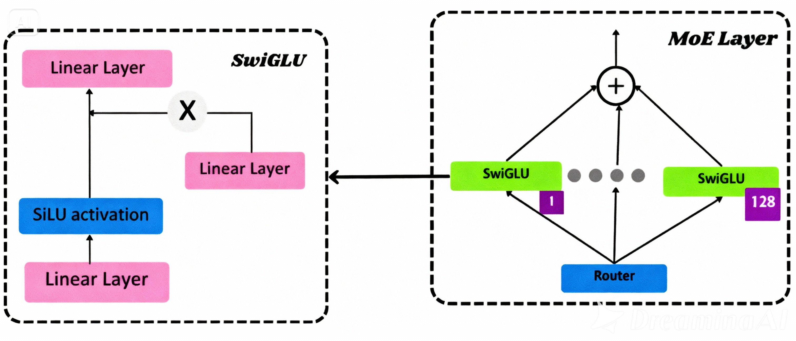

Computer Engineering student specializing in autonomous AI agents and multi-agent systems with proven experience architecting production-ready agentic workflows. Expert in LangChain, LangGraph, and LLM orchestration frameworks with hands-on experience building systems capable of reasoning, planning, and multi-step task execution. Passionate about practical AI applications that transform manual workflows into intelligent, autonomous processes—particularly in operations-heavy industries like logistics and supply chain.
Agentic AI & Multi-Agent Systems: LangChain (Expert)·LangGraph Agent Architectures·Multi-
Agent Coordination·Autonomous Task Execution·Planning & Reasoning Systems·Tool Usage &
Function Calling·Agent Memory Systems·Context Management,
LLMs & AI Development: OpenAI GPT-3.5/4·Anthropic Claude·Prompt Engineering·RAG
(Retrieval-Augmented Generation)·Fine-tuning & Model Integration·LLM Evaluation & Monitoring
ML & AI Fundamentals: PyTorch·Transformer Architecture·Embeddings·Reinforcement Learning
Concepts·Natural Language Processing·Semantic Search
Development & Integration: Python (Advanced)·FastAPI·RESTful API Design·Webhooks·API
Integration & Orchestration·Event-driven Architectures
Data & Knowledge Systems: Vector Databases (Pinecone, ChromaDB, FAISS)·Embedding Models
·Knowledge Graph Integration·Data Pipeline Design
Orchestration & Deployment: n8n Workflow Automation·Multi-step Task Planning·Error Handling
& Retry Logic·Monitoring Systems·Docker·Git/GitHub
LangChain · LangGraph · n8n · OpenAI API · Python
LangChain · Pinecone/ChromaDB · FastAPI · OpenAI Embeddings
Do not forget to buy milk today.
The image below is a link. Try to click on it.
